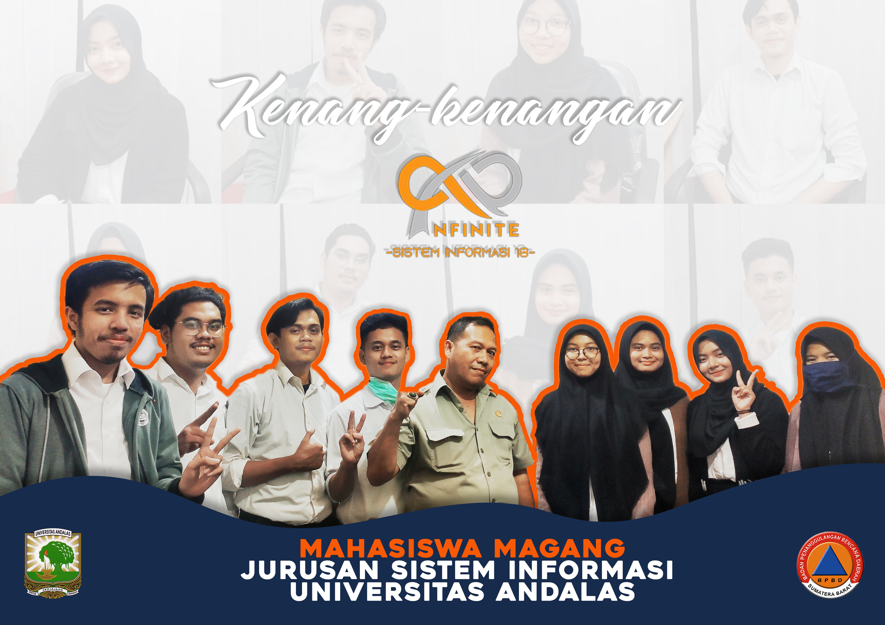

Proses Pengelolaan Pengadaan Barang Logistik pada BPBD Sumatera Barat masih menggunakan dengan cara yang bersifat konvensional (manual) dimana pada proses pengelolaan pengadaan barang logistik masih menggunakan Microsoft Excel dalam mengelola barang logistik, sehingga berikut adalah program pengelolaan barang logistik BPBD Sumbar yang sudah terkomputerisasi, sehingga proses pengelolaan barang logistik menjadi lebih cepat, efektif, dan efisien. Program tersebut diberi nama yaitu “SILOGIS” (Sistem Informasi Logistik) untuk BPBD Provinsi Sumatera Barat.

Pada Aplikasi SILOGIS ini, kita dapat melakukan pengelolaan pengadaan barang logistik yang sudah bersifat komputerisasi. Kita dapat menambahkan, mengedit atau memperbarui, dan menghapus barang. Lalu, kita juga dapat melakukan pengelolaan Barang Masuk dan Berita Acara Keluar, serta kita juga dapat melakukan rekap barang masuk dan rekap barang keluar dan kita dapat mencetak laporannya. Pada SILOGIS ini juga kita dapat menerima notifikasi terhadap barang logistik yang akan habis tanggal kadaluarsa (exp) nya.